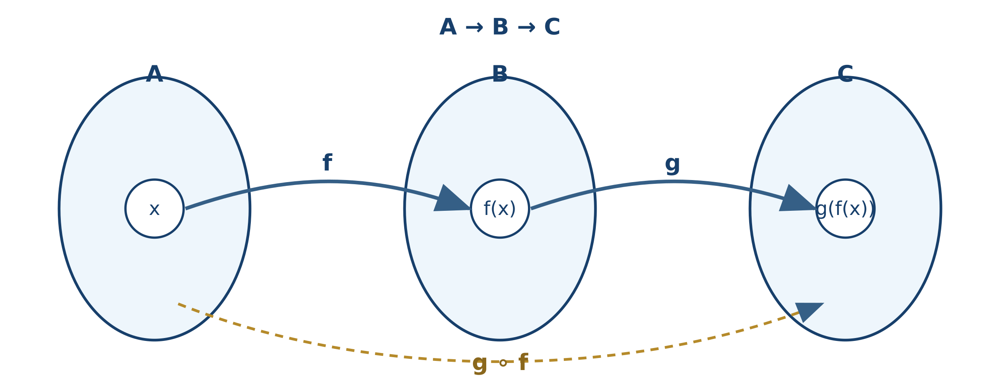
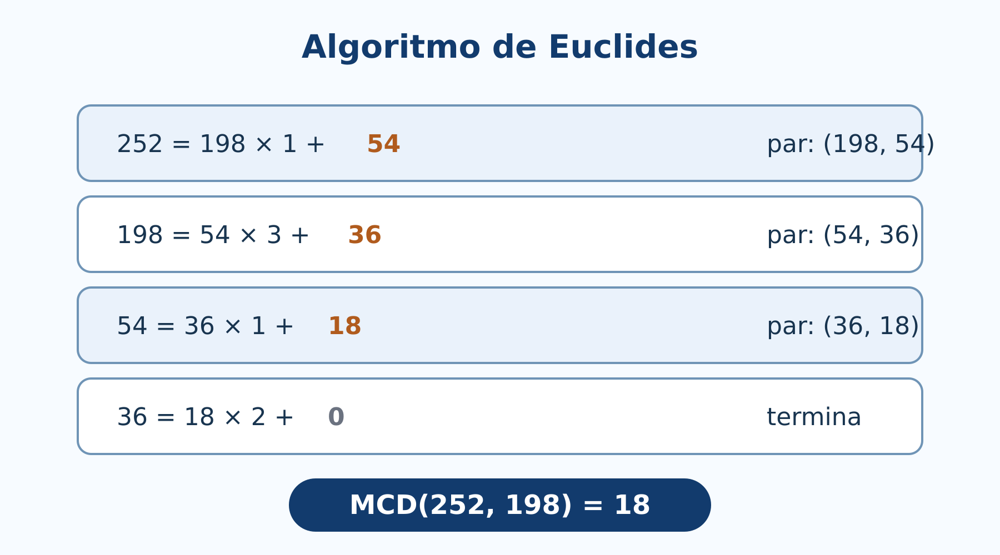

Este libro presenta los fundamentos del Álgebra Superior con rigor matemático y una exposición accesible. Cada tema parte de su significado intuitivo, establece después la definición formal y desarrolla propiedades, demostraciones, ejemplos, contraejemplos y ejercicios graduados.
La obra está concebida como complemento teórico de Álgebra Superior con aplicaciones en R y GeoGebra. La numeración de los capítulos y de las secciones principales será compatible entre ambos libros para facilitar la consulta cruzada.
El lector no solo aprenderá a efectuar operaciones. También aprenderá a:
Los capítulos contienen objetivos, definiciones destacadas, ejemplos resueltos, demostraciones, errores frecuentes, ejercicios por nivel, síntesis y referencias. Los apartados internos no se numeran para conservar un índice claro.
La obra incluye, al final, un índice temático, un índice de símbolos, un índice de figuras, un índice de cuadros y una bibliografía general. En la versión PDF, el índice general y las listas automáticas de figuras y cuadros se generan junto con la numeración de páginas.
Lenguaje, operaciones, relaciones, funciones y cardinalidad
La lógica y la teoría de conjuntos proporcionan el lenguaje con el que se expresan buena parte de las matemáticas. Cuando se afirma que una función es inyectiva, que un número pertenece a cierto conjunto o que una propiedad se cumple para todo elemento de un dominio, se están utilizando ideas que estudiaremos en este capítulo.
Lógica y conjuntos no son temas aislados. Existe una correspondencia profunda entre ellos: la conjunción de dos condiciones se relaciona con la intersección de sus conjuntos solución; la disyunción, con la unión; y la negación, con el complemento. Esta relación permitirá pasar de una afirmación verbal a una expresión simbólica y de ella a una representación gráfica o algebraica.
El capítulo sigue la primera unidad del programa de Álgebra Superior de la Facultad de Ciencias de la UASLP y amplía su componente lógico para construir una base sólida para los capítulos posteriores (Universidad Autónoma de San Luis Potosí, Facultad de Ciencias 2011). La organización y varios énfasis didácticos retoman la tradición expositiva de Silva y Lazo (2007), con notación actualizada, demostraciones propias y ejemplos nuevos.
Al finalizar, el lector será capaz de:
Pregunta inicial
Un sistema electrónico enciende una alarma cuando la fuente está habilitada y ocurre al menos una de estas dos condiciones: la temperatura es alta o la corriente rebasa el límite de seguridad. ¿Cómo se representa la regla?, ¿cómo se comprueba que dos expresiones distintas describen el mismo comportamiento? y ¿cómo se transforma la expresión en un circuito lógico? Al final del capítulo podremos responder las tres preguntas.
Las palabras conjunto y elemento se consideran nociones primitivas: se comprenden mediante su uso y no se definen a partir de conceptos más simples. De manera intuitiva, un conjunto agrupa objetos que pueden distinguirse con claridad. Esos objetos son sus elementos.
Los conjuntos se denotan normalmente con letras mayúsculas y sus elementos con letras minúsculas. Si \(x\) es un elemento de \(A\), escribimos \(x\in A\). Si no pertenece, escribimos \(x\notin A\).
Importante: pertenencia no es inclusión
La expresión \(x\in A\) relaciona un elemento con un conjunto. La expresión \(B\subseteq A\) relaciona dos conjuntos. Por ejemplo, si \(A=\{1,2,3\}\), entonces \(1\in A\) y \(\{1\}\subseteq A\), pero \(\{1\}\in A\) es falsa.
Un conjunto se representa por extensión cuando se enumeran sus elementos:
\[ A=\{2,4,6,8\}. \]
Se representa por comprensión cuando se especifica la propiedad que caracteriza a sus elementos:
\[ A=\{x\in\mathbb N:x\text{ es par y }2\le x\le 8\}. \]
El orden y la repetición no modifican un conjunto:
\[ \{1,2,3\}=\{3,2,1\}=\{1,1,2,3\}. \]
El conjunto universal \(U\) contiene todos los objetos considerados en una situación. Su elección depende del problema. El conjunto vacío no contiene elementos y se denota por \(\varnothing\). Un conjunto unitario contiene exactamente un elemento.
Error frecuente
\(\varnothing\) y \(\{\varnothing\}\) no son iguales. El primero no tiene elementos; el segundo tiene un elemento, que es precisamente el conjunto vacío. Por tanto, \[ |\varnothing|=0,\qquad |\{\varnothing\}|=1. \]
Definición: subconjunto
Sean \(A\) y \(B\) conjuntos. Se dice que \(A\) es subconjunto de \(B\), y se escribe \(A\subseteq B\), cuando todo elemento de \(A\) también pertenece a \(B\): \[ A\subseteq B \quad\Longleftrightarrow\quad \forall x\,(x\in A\Rightarrow x\in B). \]
Si \(A\subseteq B\) y \(A\ne B\), entonces \(A\) es un subconjunto propio de \(B\), escrito \(A\subsetneq B\).
Dos conjuntos son iguales si contienen exactamente los mismos elementos:
\[ A=B\quad\Longleftrightarrow\quad A\subseteq B\text{ y }B\subseteq A. \]
Esta equivalencia origina el método de doble inclusión, que utilizaremos para demostrar igualdades de conjuntos.
El conjunto potencia de \(A\), denotado por \(\mathcal P(A)\), es el conjunto de todos los subconjuntos de \(A\). Si \(A=\{a,b\}\), entonces
\[ \mathcal P(A)=\{\varnothing,\{a\},\{b\},\{a,b\}\}. \]
Si \(A\) tiene \(n\) elementos, entonces \(\mathcal P(A)\) tiene \(2^n\) elementos. Esto ocurre porque, al formar un subconjunto, cada elemento presenta dos posibilidades independientes: incluirse o no incluirse.
Sea \(B=\{1,\{2\},3\}\). Determinemos el valor de verdad de cuatro afirmaciones:
Definición: proposición
Una proposición es un enunciado declarativo al que puede asignarse exactamente uno de dos valores de verdad: verdadero (\(V\)) o falso (\(F\)).
“\(7\) es primo” es una proposición verdadera. “\(9<4\)” es una proposición falsa. Una pregunta o una orden no es una proposición. Tampoco lo es \(x+2=5\) mientras no se especifique el valor de \(x\) o se cuantifique la variable.
Una expresión como \(p(x):x+2=5\) se denomina proposición abierta o predicado. Al fijar un dominio, los valores que la hacen verdadera forman su conjunto solución. Si el dominio es \(\mathbb Z\), entonces el conjunto solución es \(\{3\}\).
Sean \(p\) y \(q\) proposiciones.
| Operación | Símbolo | Lectura | Condición de verdad |
|---|---|---|---|
| Negación | \(\neg p\) | no \(p\) | verdadera cuando \(p\) es falsa |
| Conjunción | \(p\land q\) | \(p\) y \(q\) | verdadera solo si ambas son verdaderas |
| Disyunción | \(p\lor q\) | \(p\) o \(q\) | falsa solo si ambas son falsas |
| Implicación | \(p\Rightarrow q\) | si \(p\), entonces \(q\) | falsa solo si \(p\) es verdadera y \(q\) falsa |
| Bicondicional | \(p\Leftrightarrow q\) | \(p\) si y solo si \(q\) | verdadera cuando tienen el mismo valor |
La disyunción matemática es normalmente inclusiva: \(p\lor q\) permite que \(p\), \(q\) o ambas sean verdaderas.
| \(p\) | \(q\) | \(\neg p\) | \(p\land q\) | \(p\lor q\) | \(p\Rightarrow q\) | \(p\Leftrightarrow q\) |
|---|---|---|---|---|---|---|
| V | V | F | V | V | V | V |
| V | F | F | F | V | F | F |
| F | V | V | F | V | V | F |
| F | F | V | F | F | V | V |
Cómo entender la implicación
\(p\Rightarrow q\) expresa que no puede ocurrir \(p\) sin que ocurra \(q\). Por ello solo es falsa en el caso \(p=V\) y \(q=F\). Además, \[ p\Rightarrow q\equiv \neg p\lor q. \]
Una proposición compuesta es una tautología si resulta verdadera para todas las combinaciones de valores de verdad. Es una contradicción si siempre es falsa y una contingencia si en algunas filas es verdadera y en otras falsa.
\[ p\lor\neg p \]
es una tautología, mientras que \(p\land\neg p\) es una contradicción.
Comprobemos que
\[ p\Rightarrow(q\land r)\equiv (p\Rightarrow q)\land(p\Rightarrow r). \]
\[ \begin{aligned} p\Rightarrow(q\land r) &\equiv \neg p\lor(q\land r)\\ &\equiv (\neg p\lor q)\land(\neg p\lor r)\\ &\equiv (p\Rightarrow q)\land(p\Rightarrow r). \end{aligned} \]
Como la igualdad se obtuvo mediante equivalencias válidas, el bicondicional entre ambas expresiones es una tautología.
El valor de verdad de un predicado depende de su dominio. Por ejemplo, \(x^2=2\) no tiene solución en \(\mathbb Q\), pero sí en \(\mathbb R\).
El cuantificador universal afirma que una propiedad se cumple para todos los elementos del dominio:
\[ \forall x\in D,\;p(x). \]
El cuantificador existencial afirma que se cumple para al menos uno:
\[ \exists x\in D\text{ tal que }p(x). \]
Orden de los cuantificadores
El orden puede cambiar el significado. En \(\mathbb R\), \[ \forall x\,\exists y\;(x+y=0) \] es verdadera, pues cada \(x\) tiene su propio \(y=-x\). En cambio, \[ \exists y\,\forall x\;(x+y=0) \] es falsa: un único \(y\) no puede cancelar a todos los números reales.
Negar “todos” produce “existe al menos uno que no”; negar “existe” produce “ninguno”:
\[ \neg(\forall x\in D\;p(x))\equiv\exists x\in D\;\neg p(x), \]
\[ \neg(\exists x\in D\;p(x))\equiv\forall x\in D\;\neg p(x). \]
La negación de “todo sensor está calibrado” no es “ningún sensor está calibrado”, sino “existe al menos un sensor que no está calibrado”.
Para la implicación \(p\Rightarrow q\):
| Nombre | Forma |
|---|---|
| Recíproca | \(q\Rightarrow p\) |
| Contraria | \(\neg p\Rightarrow\neg q\) |
| Contrarrecíproca | \(\neg q\Rightarrow\neg p\) |
La implicación original es equivalente a su contrarrecíproca, pero no necesariamente a su recíproca ni a su contraria:
\[ p\Rightarrow q\equiv\neg q\Rightarrow\neg p. \]
| Ley | Equivalencia lógica |
|---|---|
| Doble negación | \(\neg(\neg p)\equiv p\) |
| Idempotencia | \(p\lor p\equiv p\), \(p\land p\equiv p\) |
| Conmutatividad | \(p\lor q\equiv q\lor p\), \(p\land q\equiv q\land p\) |
| Asociatividad | \((p\lor q)\lor r\equiv p\lor(q\lor r)\) y análoga para \(\land\) |
| Distributividad | \(p\land(q\lor r)\equiv(p\land q)\lor(p\land r)\) |
| De Morgan | \(\neg(p\land q)\equiv\neg p\lor\neg q\) |
| De Morgan | \(\neg(p\lor q)\equiv\neg p\land\neg q\) |
| Absorción | \(p\lor(p\land q)\equiv p\), \(p\land(p\lor q)\equiv p\) |
| Implicación | \(p\Rightarrow q\equiv\neg p\lor q\) |
| Bicondicional | \(p\Leftrightarrow q\equiv(p\Rightarrow q)\land(q\Rightarrow p)\) |
Estas leyes pueden demostrarse con tablas de verdad. También pueden utilizarse como reglas de transformación, siempre que cada paso se justifique.
Sea \(U\) un conjunto universal y sean \(A,B\subseteq U\).
Definiciones
\[ \begin{aligned} A\cup B &= \{x\in U:x\in A\lor x\in B\},\\ A\cap B &= \{x\in U:x\in A\land x\in B\},\\ A^c &= \{x\in U:x\notin A\},\\ A\setminus B &= \{x\in U:x\in A\land x\notin B\}. \end{aligned} \]
Dos conjuntos son disjuntos si \(A\cap B=\varnothing\). La diferencia simétrica contiene los elementos que pertenecen exactamente a uno de los dos conjuntos:
\[ A\triangle B=(A\setminus B)\cup(B\setminus A). \]
Sean \(U=\{1,2,3,4,5,6\}\), \(A=\{1,2,4,6\}\) y \(B=\{2,3,4\}\). Entonces
\[ \begin{aligned} A\cup B&=\{1,2,3,4,6\},\\ A\cap B&=\{2,4\},\\ A^c&=\{3,5\},\\ A\setminus B&=\{1,6\},\\ A\triangle B&=\{1,3,6\}. \end{aligned} \]
La figura permite reconocer visualmente qué elementos deben conservarse en cada operación. El diagrama ayuda a formular y revisar una respuesta, pero una identidad general debe justificarse mediante las definiciones o una demostración por pertenencia.
Si \(p(x)\) y \(q(x)\) son predicados sobre \(U\), con conjuntos solución \(A\) y \(B\), entonces:
| Lógica | Conjuntos |
|---|---|
| \(p(x)\land q(x)\) | \(A\cap B\) |
| \(p(x)\lor q(x)\) | \(A\cup B\) |
| \(\neg p(x)\) | \(A^c\) |
| \(p(x)\land\neg q(x)\) | \(A\setminus B\) |
| \(p(x)\Rightarrow q(x)\) para todo \(x\) | \(A\subseteq B\) |
| \(p(x)\Leftrightarrow q(x)\) para todo \(x\) | \(A=B\) |
\[ \begin{aligned} A\cup A&=A,& A\cap A&=A &&\text{(idempotencia)},\\ A\cup B&=B\cup A,& A\cap B&=B\cap A &&\text{(conmutatividad)},\\ A\cap(B\cup C)&=(A\cap B)\cup(A\cap C) &&&\text{(distributividad)},\\ A\cup(A\cap B)&=A &&&\text{(absorción)},\\ (A\cup B)^c&=A^c\cap B^c &&&\text{(De Morgan)},\\ (A\cap B)^c&=A^c\cup B^c &&&\text{(De Morgan)}. \end{aligned} \]
Demostremos
\[ A\cap(B\cup C)=(A\cap B)\cup(A\cap C). \]
Sea \(x\) un elemento arbitrario. Entonces:
\[ \begin{aligned} x\in A\cap(B\cup C) &\Longleftrightarrow x\in A\land x\in(B\cup C)\\ &\Longleftrightarrow x\in A\land(x\in B\lor x\in C)\\ &\Longleftrightarrow (x\in A\land x\in B)\lor(x\in A\land x\in C)\\ &\Longleftrightarrow x\in(A\cap B)\cup(A\cap C). \end{aligned} \]
Como la equivalencia se cumple para todo \(x\), ambos conjuntos son iguales.
Estructura de una demostración de igualdad
Puede emplearse una cadena de equivalencias de pertenencia, como en el ejemplo, o demostrar por separado \(A\subseteq B\) y \(B\subseteq A\). Un diagrama de Venn ayuda a formular una conjetura, pero no sustituye una demostración general.
La cardinalidad de un conjunto finito \(A\), denotada por \(|A|\), es su número de elementos. Para dos conjuntos finitos:
\[ |A\cup B|=|A|+|B|-|A\cap B|. \]
La intersección se resta porque sus elementos se contaron una vez en \(|A|\) y otra en \(|B|\). Para tres conjuntos:
\[ \begin{aligned} |A\cup B\cup C| ={}&|A|+|B|+|C|\\ &-|A\cap B|-|A\cap C|-|B\cap C|\\ &+|A\cap B\cap C|. \end{aligned} \]
Este resultado es un caso del principio de inclusión-exclusión.
En un laboratorio se revisan \(400\) dispositivos. Sean \(T\), \(P\) y \(H\) los que utilizan sensores de temperatura, presión y humedad, respectivamente. Se conoce que
\[ \begin{gathered} |T|=170,\quad |P|=150,\quad |H|=140,\\ |T\cap P|=70,\quad |T\cap H|=60,\quad |P\cap H|=50,\\ |T\cap P\cap H|=20. \end{gathered} \]
El número de dispositivos que usan al menos uno es
\[ 170+150+140-70-60-50+20=300. \]
Por tanto, \(400-300=100\) no usan ninguno. Los que utilizan temperatura y presión, pero no humedad, son
\[ |(T\cap P)\setminus H|=|T\cap P|-|T\cap P\cap H|=70-20=50. \]
Error frecuente
El dato \(|T\cap P|=70\) incluye normalmente a quienes también pertenecen a \(H\). “Exactamente \(T\) y \(P\)” exige restar la intersección triple.
Dos pares ordenados son iguales si coinciden componente a componente:
\[ (a,b)=(c,d)\quad\Longleftrightarrow\quad a=c\text{ y }b=d. \]
El producto cartesiano de \(A\) y \(B\) es
\[ A\times B=\{(a,b):a\in A\text{ y }b\in B\}. \]
Si \(A=\{1,2\}\) y \(B=\{x,y,z\}\), entonces \(|A\times B|=2\cdot3=6\). En general, para conjuntos finitos,
\[ |A\times B|=|A|\,|B|. \]
En general \(A\times B\ne B\times A\), pues el orden de las componentes importa.
La igualdad correcta es
\[ A\times(B\cup C)=(A\times B)\cup(A\times C). \]
En efecto,
\[ \begin{aligned} (a,b)\in A\times(B\cup C) &\Longleftrightarrow a\in A\land(b\in B\lor b\in C)\\ &\Longleftrightarrow (a\in A\land b\in B)\lor(a\in A\land b\in C)\\ &\Longleftrightarrow (a,b)\in(A\times B)\cup(A\times C). \end{aligned} \]
Definición: relación binaria
Una relación \(R\) de \(A\) en \(B\) es cualquier subconjunto de \(A\times B\). Si \((a,b)\in R\), también se escribe \(aRb\).
El dominio de \(R\) es el conjunto de primeras componentes que aparecen y su recorrido es el conjunto de segundas componentes relacionadas:
\[ \operatorname{Dom}(R)=\{a\in A:\exists b\in B,\,(a,b)\in R\}, \]
\[ \operatorname{Rec}(R)=\{b\in B:\exists a\in A,\,(a,b)\in R\}. \]
La relación inversa es
\[ R^{-1}=\{(b,a):(a,b)\in R\}. \]
Cuando \(R\subseteq A\times A\), puede ser:
Una relación reflexiva, simétrica y transitiva es una relación de equivalencia. Una relación reflexiva, antisimétrica y transitiva es una relación de orden parcial.
En \(\mathbb Z\), definamos \(aRb\) si \(a-b\) es múltiplo de \(3\). La relación es reflexiva porque \(a-a=0\), simétrica porque si \(3\mid(a-b)\), entonces \(3\mid(b-a)\), y transitiva porque la suma de dos múltiplos de \(3\) vuelve a ser múltiplo de \(3\). Por tanto, es una relación de equivalencia.
Definición: función
Una función \(f:A\to B\) es una relación que asigna a cada elemento \(x\in A\) exactamente un elemento \(y\in B\). Escribimos \(y=f(x)\).
En \(f:A\to B\):
Siempre se cumple \(f(A)\subseteq B\), pero la imagen no tiene que ser todo el codominio.
Dos condiciones que no deben olvidarse
Para ser función, ningún elemento del dominio puede quedar sin imagen y ningún elemento del dominio puede tener dos imágenes distintas. En cambio, varios elementos del dominio sí pueden compartir una misma imagen.

En la figura, el diagrama central sí representa una función aunque dos entradas compartan la imagen \(a\). Esa repetición afecta la inyectividad, no la definición de función.
Una función puede representarse mediante una regla algebraica, una tabla, pares ordenados, un diagrama sagital o una gráfica. Dos funciones son iguales cuando tienen el mismo dominio, el mismo codominio y asignan el mismo valor a cada elemento del dominio.
Por ello, \(f(x)=x^2\) definida de \(\mathbb R\) en \(\mathbb R\) y \(g(x)=x^2\) definida de \([0,\infty)\) en \([0,\infty)\) no son la misma función, aunque compartan fórmula.
Sean \(f:A\to B\) y \(g:B\to C\). La composición \(g\circ f:A\to C\) se define por
\[ (g\circ f)(x)=g(f(x)). \]
La función identidad en \(A\) es \(\operatorname{id}_A:A\to A\), dada por \(\operatorname{id}_A(x)=x\). Satisface
\[ f\circ\operatorname{id}_A=f, \qquad \operatorname{id}_B\circ f=f. \]
La composición es asociativa cuando las composiciones están definidas, pero en general no es conmutativa.

La figura ayuda a recordar el orden: aunque \(g\circ f\) se escribe con \(g\) a la izquierda, al evaluar se aplica primero \(f\).
Sean \(f(x)=2x+1\) y \(g(x)=x^2\), ambas de \(\mathbb R\) en \(\mathbb R\). Entonces
\[ (g\circ f)(x)=(2x+1)^2, \qquad (f\circ g)(x)=2x^2+1. \]
Como estas expresiones no son iguales para todo \(x\), \(g\circ f\ne f\circ g\).
Para \(C\subseteq B\), la preimagen de \(C\) es
\[ f^{-1}(C)=\{x\in A:f(x)\in C\}. \]
Esta notación se utiliza aun cuando \(f\) no tenga función inversa. Debe distinguirse entre la preimagen de un conjunto, la relación inversa y la función inversa.
Sea \(f:A\to B\).
Definiciones
Para demostrar inyectividad suele partirse de \(f(x_1)=f(x_2)\). Para refutarla basta encontrar dos entradas distintas con la misma salida. Para demostrar suprayectividad se toma un \(y\) arbitrario del codominio y se construye una \(x\) del dominio tal que \(f(x)=y\).

La figura muestra dos preguntas diferentes: para la inyectividad se revisa si dos flechas llegan al mismo punto; para la suprayectividad se revisa si todo elemento del codominio recibe al menos una flecha.
La función \(f:\mathbb R\to\mathbb R\), \(f(x)=2x-3\), es biyectiva:
La función \(g:\mathbb R\to\mathbb R\), \(g(x)=x^2\), no es inyectiva porque \(g(1)=g(-1)\), y no es suprayectiva porque ningún número real tiene imagen negativa. Al restringir dominio y codominio, \(g:[0,\infty)\to[0,\infty)\) sí es biyectiva.
Teorema
Una función \(f:A\to B\) posee una función inversa \(f^{-1}:B\to A\) si y solo si \(f\) es biyectiva.
Demostración. Supongamos primero que existe \(f^{-1}\). Si \(f(x_1)=f(x_2)\), aplicar \(f^{-1}\) a ambos lados da \(x_1=x_2\); por tanto, \(f\) es inyectiva. Para cada \(y\in B\), el elemento \(x=f^{-1}(y)\) satisface \(f(x)=y\); por tanto, \(f\) es suprayectiva.
Recíprocamente, si \(f\) es biyectiva, para cada \(y\in B\) existe, por suprayectividad, al menos un \(x\in A\) con \(f(x)=y\); y por inyectividad ese \(x\) es único. Podemos definir \(f^{-1}(y)=x\). Así, \(f^{-1}\) es una función. \(\square\)
Las recíprocas requieren cuidado. Por ejemplo, si \(g\circ f\) es inyectiva, entonces \(f\) es inyectiva, pero \(g\) no necesariamente lo es en todo su dominio.
Definición
Dos conjuntos \(A\) y \(B\) tienen la misma cardinalidad, o son equipotentes, si existe una biyección \(f:A\to B\). Se escribe \(|A|=|B|\).
En conjuntos finitos esta definición coincide con contar elementos. Su verdadero alcance aparece en conjuntos infinitos.
Un conjunto es infinito si no es finito. Una propiedad sorprendente de los conjuntos infinitos usuales es que pueden tener la misma cardinalidad que un subconjunto propio. Por ejemplo, \(\mathbb N\) y el conjunto de números pares tienen la misma cardinalidad mediante \(f(n)=2n\).
Un conjunto es numerable o contable si es finito o si sus elementos pueden colocarse en una lista infinita \(a_0,a_1,a_2,\ldots\). Equivalentemente, es equipotente con \(\mathbb N_0=\{0,1,2,\ldots\}\).
Los enteros son numerables. Una enumeración posible es
\[ 0,1,-1,2,-2,3,-3,\ldots \]
Los racionales también son numerables, aunque parezcan más abundantes: pueden ordenarse por diagonales en una cuadrícula de numeradores y denominadores, omitiendo repeticiones.
La idea del argumento diagonal de Cantor demuestra que el intervalo \((0,1)\) no puede listarse por completo. Supongamos que existe una lista de todos sus números escritos en expansión decimal:
\[ x_1=0.a_{11}a_{12}a_{13}\ldots,\quad x_2=0.a_{21}a_{22}a_{23}\ldots,\quad\ldots \]
Construimos un número \(y=0.b_1b_2b_3\ldots\) eligiendo cada \(b_i\) distinto de \(a_{ii}\), por ejemplo \(b_i=1\) si \(a_{ii}\ne1\) y \(b_i=2\) si \(a_{ii}=1\). Entonces \(y\) difiere de \(x_i\) en la cifra \(i\), por lo que no coincide con ningún elemento de la lista. Esto contradice que la lista fuera completa. Por tanto, \((0,1)\), y en consecuencia \(\mathbb R\), no es numerable.
Dos usos de la palabra cardinalidad
En la sección 1.5 contamos elementos de conjuntos finitos. Aquí comparamos tamaños mediante biyecciones, una definición que también funciona para conjuntos infinitos. La segunda idea amplía a la primera; no la reemplaza.
El álgebra de Boole trabaja con variables que toman los valores \(0\) y \(1\), interpretados como falso y verdadero, apagado y encendido, o nivel lógico bajo y alto. En notación de circuitos:
\[ a\cdot b\quad\text{representa AND},\qquad a+b\quad\text{representa OR},\qquad \overline a\quad\text{representa NOT}. \]
La presentación que sigue adapta la progresión del capítulo 3 de Tocci y Widmer (2003): variables y tablas de verdad; compuertas básicas; traducción entre expresiones y circuitos; evaluación de salidas; teoremas de Boole y De Morgan; compuertas universales; y lectura de símbolos lógicos.
| Compuerta | Expresión de salida | La salida vale \(1\) cuando… |
|---|---|---|
| Buffer | \(X=a\) | la entrada vale \(1\) |
| NOT | \(X=\overline a\) | la entrada vale \(0\) |
| OR | \(X=a+b\) | al menos una entrada vale \(1\) |
| AND | \(X=a\cdot b\) | todas las entradas valen \(1\) |
| NOR | \(X=\overline{a+b}\) | todas las entradas valen \(0\) |
| NAND | \(X=\overline{a\cdot b}\) | al menos una entrada vale \(0\) |
Para obtener la expresión de un circuito se avanza desde las entradas hasta la salida y se asigna una expresión a la salida de cada compuerta. Para implantar una expresión se respeta su jerarquía: primero las negaciones y operaciones entre paréntesis, después los productos lógicos y al final las sumas lógicas.
Una tabla de verdad describe todas las combinaciones estáticas. Un diagrama de temporización muestra cómo cambian las entradas y salidas con el tiempo. Para trazar una salida:
En este primer tratamiento ideal se omiten los retardos de propagación. Estos se incorporarán en un estudio posterior de circuitos digitales.
Una señal es activa en alto si realiza su función cuando vale \(1\). Es activa en bajo si realiza su función cuando vale \(0\). En diagramas digitales, una burbuja en una terminal indica inversión o activación en bajo. En los nombres de señales, una barra superior o una notación equivalente puede indicar que la señal se activa con nivel bajo.
No confundir nivel lógico con voltaje exacto
Los valores booleanos \(0\) y \(1\) representan estados lógicos. En un circuito físico corresponden a intervalos de voltaje definidos por la familia lógica; no deben interpretarse automáticamente como \(0\) V y \(1\) V.
Las leyes de la lógica proposicional se convierten en reglas de simplificación:
\[ \begin{aligned} a+a&=a, & a\cdot a&=a,\\ a+0&=a, & a\cdot1&=a,\\ a+1&=1, & a\cdot0&=0,\\ a+\overline a&=1, & a\cdot\overline a&=0,\\ a+a\cdot b&=a, & a(a+b)&=a,\\ \overline{a+b}&=\overline a\cdot\overline b, &\overline{a\cdot b}&=\overline a+\overline b. \end{aligned} \]
\[ F=a+a\cdot\overline b=a \]
por la ley de absorción. El circuito inicial usaría una compuerta NOT, una AND y una OR; el circuito simplificado solo requiere conectar la señal \(a\) a la salida. Ambas expresiones poseen la misma tabla de verdad, pero la segunda implementación utiliza menos componentes.
Otro ejemplo es
\[ G=a\cdot b+a\cdot\overline b =a(b+\overline b)=a\cdot1=a. \]
NAND y NOR combinan una operación básica con una negación:
\[ a\uparrow b=\overline{a\cdot b}, \qquad a\downarrow b=\overline{a+b}. \]
Los teoremas de De Morgan permiten cambiar entre representaciones equivalentes. Al negar una suma, esta se transforma en producto de variables negadas; al negar un producto, se transforma en suma de variables negadas. Esta idea explica las representaciones alternativas mediante burbujas que se utilizan al analizar circuitos.
La compuerta NOR se define por \(a\downarrow b=\overline{a+b}\). Es universal porque permite construir las tres operaciones básicas:
\[ \overline a=a\downarrow a, \]
\[ a+b=(a\downarrow b)\downarrow(a\downarrow b), \]
\[ a\cdot b=(a\downarrow a)\downarrow(b\downarrow b). \]
Como NOT, OR y AND pueden obtenerse solamente con NOR, cualquier función booleana puede implementarse con compuertas NOR.
NAND también es universal:
\[ \overline a=a\uparrow a, \]
\[ a\cdot b=(a\uparrow b)\uparrow(a\uparrow b), \]
\[ a+b=(a\uparrow a)\uparrow(b\uparrow b). \]
Una misma función puede dibujarse con símbolos equivalentes obtenidos mediante De Morgan. El criterio esencial no es la apariencia aislada de una compuerta, sino la función que resulta al considerar su forma y las burbujas de sus entradas y salida. Las figuras definitivas del libro utilizarán una convención uniforme basada en símbolos lógicos estándar IEEE/ANSI y explicarán, mediante pares de diagramas, cuándo conviene una representación AND-OR, NAND-NAND, OR-AND o NOR-NOR (Tocci y Widmer 2003).
Método para simplificar y diseñar
Diseñe la lógica de un sistema de monitoreo con tres entradas binarias. El proyecto debe incluir:
La exposición se apoya en el programa de la asignatura (Universidad Autónoma de San Luis Potosí, Facultad de Ciencias 2011), en el tratamiento integrado de lógica y conjuntos de Silva y Lazo (2007) y en textos de matemáticas discretas como Epp (2011) y Rosen (2019). Para una introducción clásica al lenguaje de conjuntos puede consultarse Halmos (1960). La aplicación a compuertas y álgebra de Boole sigue como referencia principal el capítulo 3 de Tocci y Widmer (2003).
Estructura, inducción, divisibilidad, primos, orden y distancia
Los números se aprenden primero como herramientas para contar y medir. En Álgebra Superior interesa además comprender por qué sus reglas funcionan, qué propiedades distinguen a cada sistema numérico y cómo se justifican afirmaciones que involucran infinitos casos.
El capítulo sigue la segunda unidad del programa de Álgebra Superior de la Facultad de Ciencias de la UASLP (Universidad Autónoma de San Luis Potosí, Facultad de Ciencias 2011). La exposición distingue con cuidado tres niveles: las propiedades que se aceptan como estructura, los teoremas que se deducen de ellas y los procedimientos que permiten calcular. La inducción, el algoritmo de Euclides y la factorización prima son ejemplos centrales de esta relación.
Al finalizar, el lector será capaz de:
Pregunta inicial
¿Cómo puede demostrarse que \(1+3+5+\cdots +(2n-1)=n^2\) para todo entero positivo \(n\)? ¿Por qué el algoritmo que divide repetidamente permite calcular \(\gcd(252,198)\)? ¿Qué diferencia estructural existe entre \(\mathbb Q\) y \(\mathbb R\)? Este capítulo desarrolla las herramientas para responder estas preguntas.
Denotamos por
\[ \mathbb Z=\{\ldots,-3,-2,-1,0,1,2,3,\ldots\} \]
el conjunto de los números enteros. Los enteros positivos se utilizan para contar; el cero expresa ausencia o referencia, y los enteros negativos permiten representar desplazamientos, deudas, temperaturas bajo cero y operaciones inversas de la suma.
La relación de inclusión entre los primeros sistemas numéricos es
\[ \mathbb N\subseteq\mathbb Z\subseteq\mathbb Q\subseteq\mathbb R. \]
En este libro tomaremos \(\mathbb N=\{1,2,3,\ldots\}\) y escribiremos \(\mathbb N_0=\mathbb N\cup\{0\}\) cuando sea necesario incluir el cero.
Para cualesquiera \(a,b,c\in\mathbb Z\) se cumplen las propiedades siguientes.
| Propiedad | Suma | Producto |
|---|---|---|
| Cerradura | \(a+b\in\mathbb Z\) | \(ab\in\mathbb Z\) |
| Conmutatividad | \(a+b=b+a\) | \(ab=ba\) |
| Asociatividad | \((a+b)+c=a+(b+c)\) | \((ab)c=a(bc)\) |
| Elemento neutro | \(a+0=a\) | \(a\cdot1=a\) |
| Inverso | \(a+(-a)=0\) | solo \(1\) y \(-1\) tienen inverso entero |
La suma y el producto se relacionan mediante la propiedad distributiva:
\[ a(b+c)=ab+ac. \]
Los enteros forman un anillo conmutativo con identidad. No forman un campo, porque un entero distinto de \(1\) y \(-1\) no tiene inverso multiplicativo dentro de \(\mathbb Z\). Por ejemplo, el inverso de \(2\) es \(1/2\), que no es entero.
El orden en \(\mathbb Z\) es total: dados \(a,b\in\mathbb Z\), exactamente una de estas afirmaciones es verdadera:
\[ a<b,\qquad a=b,qquad a>b. \]
El orden es compatible con las operaciones:
Principio del buen orden
Todo subconjunto no vacío de \(\mathbb N\) posee un elemento mínimo.
Este principio parece elemental, pero sostiene demostraciones importantes. Por ejemplo, permite justificar el algoritmo de la división y es equivalente, en un sentido lógico preciso, al principio de inducción.
Las reglas de signos no son convenciones aisladas: se deducen de las propiedades anteriores. Como
\[ 0=a\cdot0=a(0+0)=a\cdot0+a\cdot0, \]
al sumar el inverso de \(a\cdot0\) en ambos lados se obtiene \(a\cdot0=0\). Además,
\[ 0=(-a)(b+(-b))=(-a)b+(-a)(-b), \]
y como \((-a)b=-(ab)\), resulta
\[ (-a)(-b)=ab. \]
Una afirmación \(P(n)\) puede verificarse para muchos valores particulares sin quedar demostrada para todos los naturales. La inducción matemática permite pasar de un caso inicial a una cadena infinita de casos.
Principio de inducción
Sea \(P(n)\) una proposición definida para todo \(n\ge n_0\). Si:
entonces \(P(n)\) es verdadera para todo \(n\ge n_0\).
La afirmación \(P(k)\) que se supone temporalmente verdadera se llama hipótesis inductiva. No se está suponiendo la conclusión completa; se demuestra una implicación: \(P(k)\Rightarrow P(k+1)\).

Demostremos que
\[ 1+3+5+\cdots +(2n-1)=n^2 \]
para todo \(n\in\mathbb N\).
Caso base. Para \(n=1\),
\[ 1=1^2. \]
Hipótesis inductiva. Supongamos que para algún \(k\ge1\),
\[ 1+3+\cdots +(2k-1)=k^2. \]
Paso inductivo. Al agregar el siguiente impar, \(2(k+1)-1=2k+1\), obtenemos
\[ \begin{aligned} 1+3+\cdots +(2k-1)+(2k+1) &=k^2+2k+1\\ &=(k+1)^2. \end{aligned} \]
Por inducción, la igualdad se cumple para todo \(n\ge1\).
Para \(r\ne1\) y \(n\in\mathbb N_0\),
\[ 1+r+r^2+\cdots+r^n=\frac{r^{n+1}-1}{r-1}. \]
El caso \(n=0\) produce \(1=(r-1)/(r-1)\). Si la fórmula vale para \(n=k\), entonces
\[ \begin{aligned} 1+r+\cdots+r^k+r^{k+1} &=\frac{r^{k+1}-1}{r-1}+r^{k+1}\\ &=\frac{r^{k+2}-1}{r-1}. \end{aligned} \]
En la inducción fuerte, para demostrar \(P(k+1)\) se permite utilizar todos los casos anteriores:
\[ P(n_0),P(n_0+1),\ldots,P(k). \]
Es especialmente útil cuando un objeto se descompone en partes menores. Por ejemplo, para demostrar que todo entero \(n>1\) es primo o producto de primos, si \(n\) no es primo se escribe \(n=ab\) con \(1<a,b<n\) y se aplica la hipótesis fuerte a \(a\) y \(b\).
Errores frecuentes en inducción
Sean \(a,b\in\mathbb Z\) con \(a\ne0\). Decimos que \(a\) divide a \(b\), y escribimos \(a\mid b\), si existe \(k\in\mathbb Z\) tal que
\[ b=ak. \]
Si no existe tal entero, escribimos \(a\nmid b\). Por ejemplo, \(7\mid42\) porque \(42=7\cdot6\), mientras que \(7\nmid40\).
Si \(a\mid b\) y \(a\mid c\), entonces para cualesquiera \(m,n\in\mathbb Z\),
\[ a\mid(mb+nc). \]
En efecto, si \(b=ar\) y \(c=as\), entonces \(mb+nc=a(mr+ns)\).
Teorema: algoritmo de la división
Dados \(a\in\mathbb Z\) y \(d\in\mathbb Z\) con \(d>0\), existen enteros únicos \(q\) y \(r\) tales que
\[ a=dq+r,\qquad 0\le r<d. \]
\(q\) es el cociente y \(r\) el residuo.
Por ejemplo,
\[ 47=6(7)+5, \]
de modo que el cociente es \(7\) y el residuo es \(5\). Para un dividendo negativo debe conservarse la condición \(0\le r<d\):
\[ -47=6(-8)+1. \]
El máximo común divisor de enteros \(a\) y \(b\), no ambos cero, es el mayor entero positivo que divide a ambos. Se denota por \(\gcd(a,b)\).
Si
\[ a=bq+r, \]
entonces los divisores comunes de \(a\) y \(b\) son exactamente los divisores comunes de \(b\) y \(r\). Por tanto,
\[ \gcd(a,b)=\gcd(b,r). \]
Esta igualdad origina el algoritmo de Euclides. Para \(252\) y \(198\):
\[ \begin{aligned} 252&=198(1)+54,\\ 198&=54(3)+36,\\ 54&=36(1)+18,\\ 36&=18(2)+0. \end{aligned} \]
El último residuo no nulo es \(18\), por lo que \(\gcd(252,198)=18\).

El máximo común divisor puede expresarse como combinación lineal:
\[ \gcd(a,b)=ax+by \]
para ciertos \(x,y\in\mathbb Z\). Al recorrer hacia atrás el ejemplo,
\[ 18=54-36=54-(198-3\cdot54)=4\cdot54-198=4\cdot252-5\cdot198. \]
Así, \(x=4\) y \(y=-5\) son coeficientes de Bézout.
Un entero \(p>1\) es primo si sus únicos divisores positivos son \(1\) y \(p\). Un entero mayor que \(1\) que no es primo se llama compuesto. El número \(1\) no es primo ni compuesto.
Para decidir si \(n>1\) es primo basta probar divisores primos no mayores que \(\sqrt n\). Si \(n=ab\) y ambos factores fueran mayores que \(\sqrt n\), entonces \(ab>n\), lo cual es imposible.
Lema de Euclides
Si \(p\) es primo y \(p\mid ab\), entonces \(p\mid a\) o \(p\mid b\).
Teorema fundamental de la aritmética
Todo entero \(n>1\) puede expresarse como producto de números primos. Esa factorización es única, salvo el orden de los factores.
La existencia puede demostrarse por inducción fuerte. La unicidad se apoya en el lema de Euclides. Por ejemplo,
\[ 756=2^2\cdot3^3\cdot7. \]

Si
\[ a=\prod_p p^{\alpha_p},\qquad b=\prod_p p^{\beta_p}, \]
entonces
\[ \gcd(a,b)=\prod_p p^{\min(\alpha_p,\beta_p)}, \]
y
\[ \operatorname{mcm}(a,b)=\prod_p p^{\max(\alpha_p,\beta_p)}. \]
Para \(a,b>0\) se cumple además
\[ \gcd(a,b)\operatorname{mcm}(a,b)=ab. \]
Supongamos que solo existieran los primos \(p_1,\ldots,p_n\) y consideremos
\[ N=p_1p_2\cdots p_n+1. \]
Ningún \(p_i\) divide a \(N\), porque el residuo sería \(1\). Sin embargo, \(N>1\) debe ser primo o tener un divisor primo. En ambos casos aparece un primo que no estaba en la lista, contradicción. Por tanto, existen infinitos números primos.
Un número racional es un cociente de enteros:
\[ \mathbb Q=\left\{\frac ab:a,b\in\mathbb Z,\ b\ne0\right\}. \]
Fracciones distintas pueden representar el mismo racional; por ejemplo,
\[ \frac12=\frac24=\frac{-3}{-6}. \]
Todo racional posee una expansión decimal finita o periódica. Recíprocamente, toda expansión decimal finita o periódica representa un racional.
Los números que no son racionales se llaman irracionales. Ejemplos clásicos son \(\sqrt2\), \(\pi\) y \(e\). Los números reales reúnen racionales e irracionales:
\[ \mathbb R=\mathbb Q\cup(\mathbb R\setminus\mathbb Q). \]

Demostremos que \(\sqrt2\) es irracional. Supongamos que \(\sqrt2=a/b\) en forma irreducible. Entonces
\[ a^2=2b^2. \]
Por tanto, \(a^2\) es par y \(a\) también es par; escribamos \(a=2k\). Sustituyendo,
\[ 4k^2=2b^2\quad\Longrightarrow\quad b^2=2k^2, \]
así que \(b\) también es par. Esto contradice que \(a/b\) estuviera reducida. Luego \(\sqrt2\notin\mathbb Q\).
Entre dos números reales distintos siempre existe un racional y también un irracional. En particular, si \(a<b\), entonces su punto medio
\[ \frac{a+b}{2} \]
está entre ambos, aunque no necesariamente sea racional cuando \(a\) y \(b\) son reales arbitrarios. La densidad muestra que racionales e irracionales están entrelazados en la recta real.
Los reales forman un campo ordenado. Además de las propiedades de suma y producto vistas para los enteros, todo \(a\ne0\) tiene inverso multiplicativo \(a^{-1}=1/a\) en \(\mathbb R\). El orden es compatible con las operaciones.
Una consecuencia importante es que todo cuadrado es no negativo. Si \(x\ge0\), entonces \(x^2\ge0\). Si \(x<0\), entonces \(-x>0\) y \(x^2=(-x)^2>0\). De aquí se obtiene, por ejemplo, que
\[ x^2+1>0 \]
para todo \(x\in\mathbb R\).
La propiedad que distingue a \(\mathbb R\) de \(\mathbb Q\) es la completitud.
Axioma del supremo
Todo subconjunto no vacío de \(\mathbb R\) que está acotado superiormente posee un supremo en \(\mathbb R\).
El supremo de un conjunto \(A\) es su menor cota superior. No tiene que pertenecer a \(A\). Por ejemplo,
\[ A=\{x\in\mathbb R:x<2\} \]
tiene supremo \(2\), pero \(2\notin A\).
En \(\mathbb Q\) la completitud falla: el conjunto
\[ \{q\in\mathbb Q:q^2<2\} \]
está acotado superiormente, pero no tiene supremo racional.
Para todo real \(x\) existe \(n\in\mathbb N\) tal que \(n>x\). Esta propiedad impide que existan reales infinitamente grandes o infinitesimales distintos de cero dentro del sistema usual.
Los intervalos expresan conjuntos definidos por desigualdades:
| Desigualdad | Intervalo |
|---|---|
| \(a<x<b\) | \((a,b)\) |
| \(a\le x\le b\) | \([a,b]\) |
| \(a<x\le b\) | \((a,b]\) |
| \(x\ge a\) | \([a,\infty)\) |
Al multiplicar una desigualdad por un número negativo se invierte su sentido. Por ejemplo,
\[ -3x<12\quad\Longleftrightarrow\quad x>-4. \]
Para \(a\ne0\) y \(n\in\mathbb N\) se define
\[ a^{-n}=\frac1{a^n},\qquad a^0=1. \]
Estas definiciones conservan la ley \(a^m a^n=a^{m+n}\). El caso \(0^0\) no se define de manera universal en álgebra elemental, y \(0^{-n}\) no existe.
Sea \(m/n\) una fracción reducida con \(n>0\). Para \(a>0\) definimos
\[ a^{m/n}=\sqrt[n]{a^m}=\left(\sqrt[n]{a}\right)^m. \]
Si \(n\) es impar, la definición puede extenderse a bases negativas. Si \(n\) es par, una base negativa no produce un número real. Así,
\[ (-8)^{1/3}=-2,qquad (-8)^{1/2}\notin\mathbb R. \]
Para bases positivas y exponentes racionales se cumplen
\[ a^r a^s=a^{r+s},\qquad \frac{a^r}{a^s}=a^{r-s}, \]
\[ (a^r)^s=a^{rs},\qquad (ab)^r=a^r b^r. \]
Las restricciones de signo no son detalles menores. Por ejemplo,
\[ \sqrt{x^2}=|x|, \]
no \(x\) para todo real \(x\). Si \(x=-3\), entonces \(\sqrt{x^2}=3\ne-3\).
Error frecuente
En general, \[ \sqrt{a+b}\ne\sqrt a+\sqrt b. \] Con \(a=b=1\), el lado izquierdo es \(\sqrt2\) y el derecho es \(2\).
El valor absoluto de \(x\in\mathbb R\) se define por
\[ |x|= \begin{cases} x, & x\ge0,\\ -x, & x<0. \end{cases} \]
Geométricamente, \(|x|\) es la distancia de \(x\) al origen y \(|x-a|\) es la distancia entre \(x\) y \(a\).

Para \(x,y\in\mathbb R\):
\[ |x|\ge0,qquad |x|=0\Longleftrightarrow x=0, \]
\[ |xy|=|x||y|,qquad \left|\frac xy\right|=\frac{|x|}{|y|}\quad(y\ne0), \]
\[ |x+y|\le|x|+|y|. \]
La última expresión es la desigualdad triangular. Como
\[ -|x|\le x\le|x|, \]
y análogamente para \(y\), al sumar se obtiene
\[ -(|x|+|y|)\le x+y\le |x|+|y|, \]
lo que implica \(|x+y|\le|x|+|y|\).
Para \(r>0\):
\[ |x-a|=r\quad\Longleftrightarrow\quad x=a-r\text{ o }x=a+r, \]
\[ |x-a|<r\quad\Longleftrightarrow\quad a-r<x<a+r, \]
\[ |x-a|>r\quad\Longleftrightarrow\quad x<a-r\text{ o }x>a+r. \]
Ejemplo:
\[ |2x-3|\le5 \]
equivale a
\[ -5\le2x-3\le5, \]
por lo que
\[ -1\le x\le4. \]
Construya un estudio completo de dos enteros positivos \(a\) y \(b\) elegidos por el equipo:
La secuencia corresponde a la segunda unidad del programa de Álgebra Superior (Universidad Autónoma de San Luis Potosí, Facultad de Ciencias 2011). Las propiedades de los sistemas numéricos, la inducción y las desigualdades se apoyan en Silva y Lazo (2007) y Rosen (2019). Para divisibilidad, algoritmos y factorización se consultaron Burton (2011) y Niven, Zuckerman, y Montgomery (1991).
Estos índices complementan el índice general del libro. Los conceptos remiten a la primera sección principal donde se desarrollan; algunos reaparecen en ejercicios, demostraciones y aplicaciones posteriores.
| Símbolo | Significado | Primera sección de uso |
|---|---|---|
| \(x\in A\) | \(x\) pertenece a \(A\) | 1.1 |
| \(A\subseteq B\) | \(A\) es subconjunto de \(B\) | 1.1 |
| \(\mathcal P(A)\) | conjunto potencia de \(A\) | 1.1 |
| \(\neg,\land,\lor\) | negación, conjunción y disyunción | 1.2 |
| \(\Rightarrow,\Leftrightarrow\) | implicación y bicondicional | 1.2 |
| \(\forall,\exists\) | cuantificadores universal y existencial | 1.3 |
| \(A\cup B,A\cap B,A^c\) | unión, intersección y complemento | 1.4 |
| \(|A|\) | cardinalidad de un conjunto | 1.5 |
| \(A\times B\) | producto cartesiano | 1.6 |
| \(f:A\to B\) | función de \(A\) en \(B\) | 1.7 |
| \(\mathbb N,\mathbb Z,\mathbb Q,\mathbb R\) | naturales, enteros, racionales y reales | 2.1 y 2.5 |
| \(a\mid b\) | \(a\) divide a \(b\) | 2.3 |
| \(\gcd(a,b)\) | máximo común divisor | 2.3 |
| \(\operatorname{mcm}(a,b)\) | mínimo común múltiplo | 2.4 |
| \(\sup A\) | supremo de \(A\) | 2.6 |
| \(|x-a|\) | distancia entre \(x\) y \(a\) | 2.8 |
Las referencias se presentan en una sola lista general para evitar duplicaciones. Cada capítulo conserva al final una nota breve que identifica sus fuentes principales.